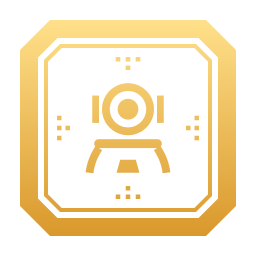
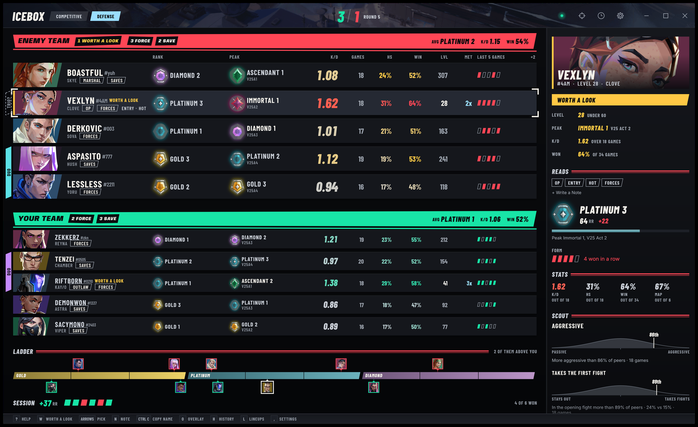
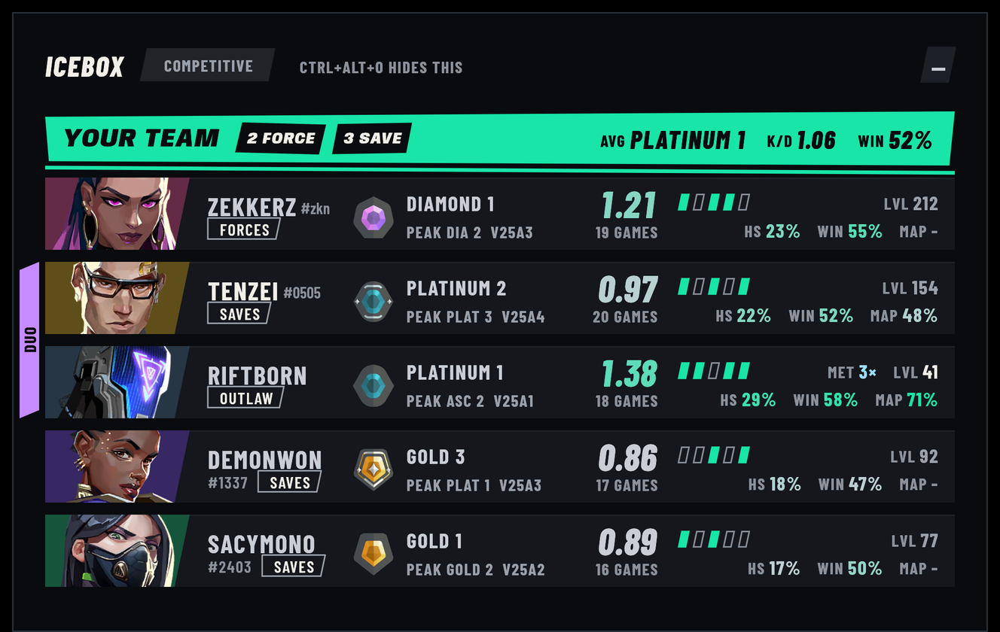
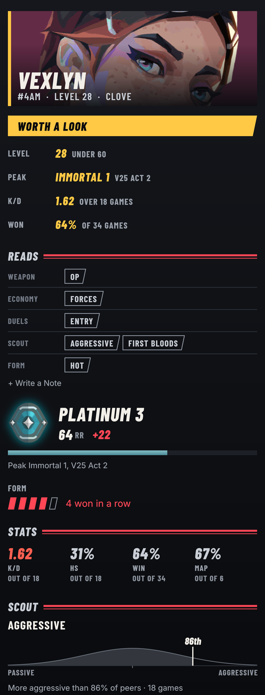
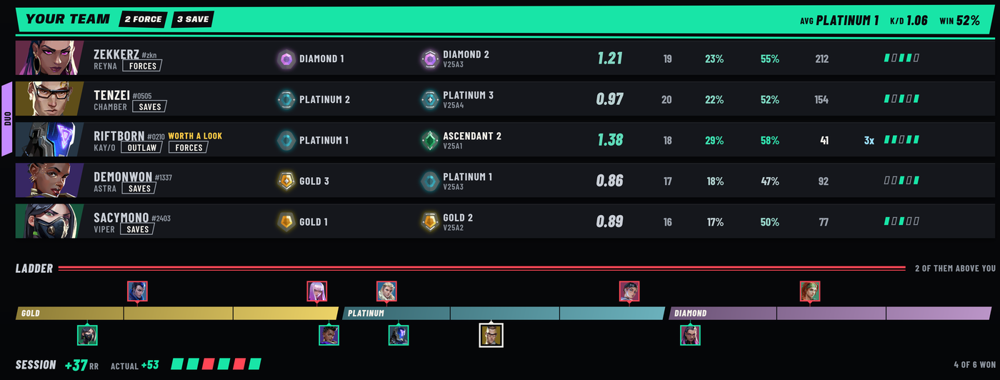
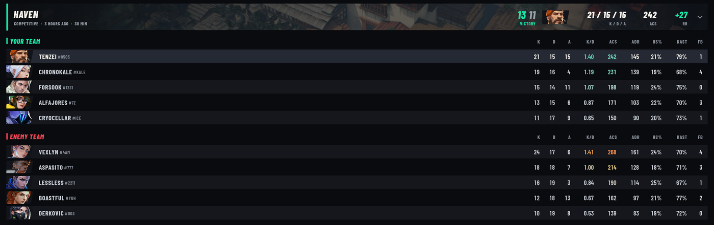
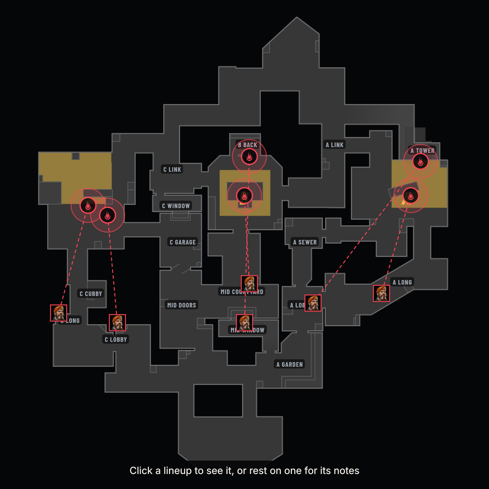
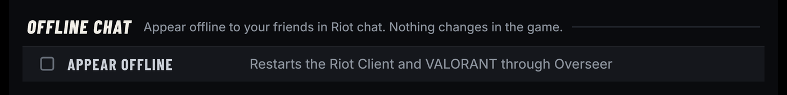

Before Round One
Every player in your match, ranked. Free for Windows 10 and 11, and it runs on your PC with no account.
Download for WindowsValorant Overseer2.5.1

Valorant OverseerEvery player in your match, ranked before round one.
Rank, peak rank, K/D, headshot and win rates and who queued together, for all ten players, in a window beside VALORANT. Free for Windows 10 and 11, and it runs on your PC with no account.

As soon as agent select opens, a small window sits over the game with your team's ranks, peaks, K/D, recent form and parties. It goes away once the match loads.
It never takes the focus from VALORANT, and it shows over the game's default borderless window. Ctrl+Alt+O, or any key or mouse button you set, shows or hides it at any time, and it can sit in any corner.

The whole lobby goes on one board, with each player's rank, peak rank and the act they reached it, K/D, headshot rate, win rate, level, RR and their last five games. The other team sits on top, since they're the five you can't see in game. Press ? for a Help screen that explains every colour and mark on the board.


Rest the pointer on a player and the panel opens on their card, their rank with its RR, their form over recent games, the agents they main and a rating line across their last ten. It also lists who they play with most, and how often they win together.
Reads sum up their habits from those matches, like whether they save or force on a bad round, or only ever play one agent. An account that looks like a smurf is flagged Worth a Look, with the reasons beside it. Notes and tags you leave on a player come back the next time you meet them.
Scout sets their recent games against other players on the same agent in the same rank band. It names their pace, like Aggressive, and up to two habits that stand out, each on a curve of those peers with a tip for playing against it, then guesses what they will buy on this kind of round from the rounds like it they have played.
Parties get a tab down the side of their rows, so a duo or a trio reads at a glance. The ladder under the board puts everyone in the lobby on their rank's plate, the other team above it and yours below, and your session's RR keeps count of the night.

Your recent games with the score, your K/D/A, ACS and the RR you won or lost. Open one for the full scoreboard, with ADR, headshot rate, KAST and first bloods for all ten players.

Drag from where you stand to where it lands, pick the agent and the ability, and add a clip from a YouTube link or a video of your own, trimmed right in the app.
Draw on the map, check a turret's line of sight, and share a map's lineups as a code to paste in chat. The Sandbox under Draw hides the lineups and keeps nothing, with every agent and the Spike to put on the map.

Hide from your friends in Riot chat without changing anything in the game. Overseer restarts the Riot Client and VALORANT to do it, so finish your match first.

Your match comes from the Riot Client's own local API on your PC, the same one the client uses to show your party.
It never reads VALORANT's memory, and it never clicks, types or locks in an agent. The overlay is an ordinary window with no hooks into the game.
It asks Riot's servers for the recent games of the players in your match. Agent and map art comes from valorant-api.com, and nothing about you is sent there.
There's nothing to sign up for, no server of its own and no tracking. Your notes, lineups and history stay on your PC.
Once a day it asks GitHub which version is newest, and the footer says when one is out. Settings turns that check off.
The window takes about 175 MB of memory, draws nothing while you leave it alone, and asks for the integrated GPU so VALORANT keeps the faster one.
Setup installs Overseer into AppData with its own copy of Python, so it needs no admin rights. It also installs yt-dlp and FFmpeg with winget for lineup clips. A new version's setup updates in place and keeps your region, lineups, notes and settings, and it uninstalls from Settings, then Apps.
Download Valorant-Overseer-Setup.exe from the latest release on GitHub.
Open it and pick your region. If Windows says it protected your PC, click More info, then Run anyway.
Open VALORANT and join a lobby. Overseer fills in as soon as there's a match to show.
Yes. It's free for anything noncommercial under the PolyForm Strict License 1.0.0. You can't sell it, use it in a business, share copies of it or publish a changed version.
No account. Overseer talks to the Riot Client on your PC and to Riot's servers for match data, and fetches agent and map art from valorant-api.com without sending anything about you. Once a day it asks GitHub which version is newest, and Settings turns that off. It has no server of its own and no tracking.
No. It reads your match from the Riot Client's own local API. It never reads the game's memory, and it never clicks, types or locks in an agent.
Overseer never touches the game, but whether third-party tools are allowed is Riot's decision, so it can't promise anything either way.
No. It's a Windows app, for Windows 10 and 11.
When a new version is out, the footer says so. Download that version's setup and run it. It updates in place and keeps your region, lineups, notes and settings. Overseer never downloads or installs anything by itself.
Paste a YouTube link or pick a video on your PC, trim it in the app, and Overseer cuts the clip with yt-dlp and FFmpeg, which setup installs with winget.
Every player in your match, ranked. Free for Windows 10 and 11, and it runs on your PC with no account.
Download for WindowsValorant Overseer2.5.1